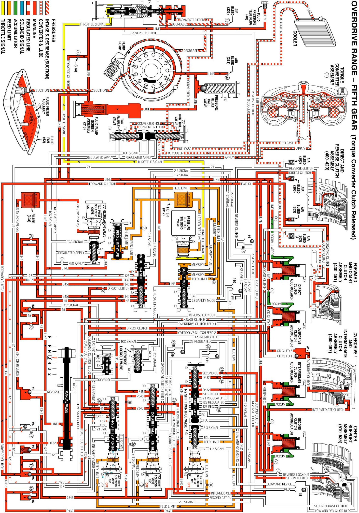

Overdrive Range, Fifth Gear - Torque Converter Clutch Released
Overdrive Range, Fifth Gear - Torque Converter Clutch Released
Overdrive Range - Fifth Gear is used to maximize engine efficiency and fuel economy under most normal driving conditions. In order to shift the transmission into Fifth gear, the TCM receives input signals from both speed sensors, the TP sensor and other vehicle sensors to determine the precise moment to de-energize or "turn OFF" the 4-5 shift solenoid (SS) valve.
Overdrive Clutch Applied
4-5 Shift Solenoid (SS) Valve
- The 4-5 SS valve is de-energized, blocking feed limit fluid from entering the 4-5 signal fluid circuit. 4-5 signal fluid pressure exhausts through the 4-5 SS valve and 4-5 shift valve spring (373) force moves the 4-5 shift valve (374) and the 4-5 shift control valve (375) to the released position.
4-5 Shift Valve
- 45 fluid is routed through the 4-5 shift valve and enters the overdrive clutch feed 2 fluid circuit through orifice #28.
#12 Ball Check Valve
- Overdrive clutch feed 2 fluid seats the #12 ball check valve against the overdrive clutch feed 1 passage and enters the overdrive clutch fluid circuit.
Overdrive Clutch
- Overdrive clutch fluid is then directed to the overdrive clutch piston to apply the overdrive clutch plates and achieve Fifth gear.
4-5 Shift Accumulation
Overdrive Clutch Accumulator
- Overdrive clutch fluid is also sent to the overdrive clutch accumulator assembly. Overdrive clutch fluid, together with accumulator spring force, moves the overdrive clutch accumulator piston against accumulator fluid pressure to cushion the apply of the overdrive clutch.
Coast Clutch Releases
Coast Clutch
- When the 4-5 shift valve is shifted to the released position, coast clutch feed fluid is blocked and coast clutch fluid exhausts through the valve allowing the coast clutch to release.
4-5 Shift Valve
- Coast clutch fluid passes through the 4-5 shift valve and into the 123 circuit and on to the 3-4 shift valve where it exhausts.
Torque Converter Clutch Released
TCC PWM Solenoid Valve
- Filtered 2345 or reverse fluid is still available at the TCC PWM solenoid valve. However, depending on the shift pattern, the TCM keeps the pulse width modulated (PWM) solenoid de-energized blocking filtered 2345 or reverse fluid from entering the TCC signal fluid circuit, thereby keeping the torque converter clutch released.
Overdrive Range, Fifth Gear - Torque Converter Clutch (TCC) Released
Overdrive Range, Fifth Gear - Torque Converter Clutch (TCC) Released:
